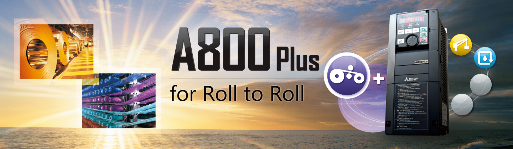
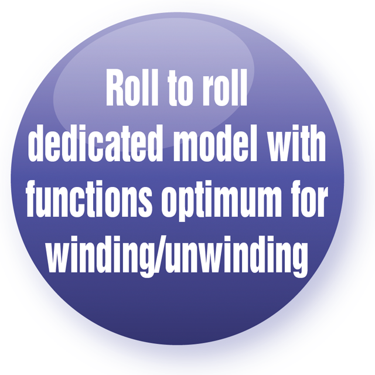
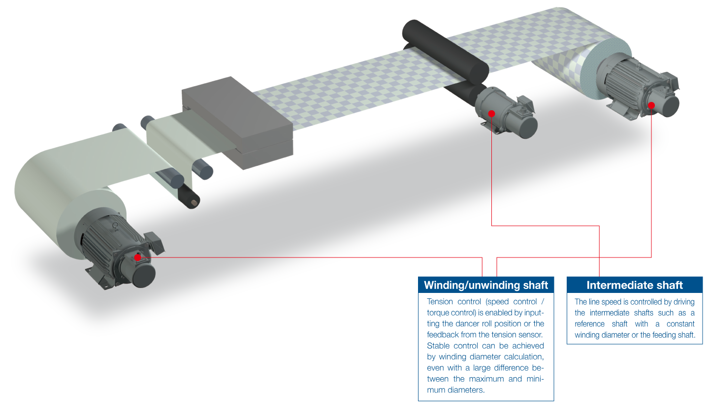

Inverters-FREQROL-A800 Plus Series -FREQROL-A800 Plus for Roll to Roll- Concept


Concept
In roll to roll applications, control is necessary for machining of elongated products such as paper, film, and thread. Processing types include printing, slitting, coating, and twisting. High productivity can be achieved by stable tension control.
The FR-A800-R2R inverter can be used in a wide variety of systems with various dedicated functions.

 System simplification
System simplification
Stable winding/unwinding can be achieved by the inverter alone.- Wide range of applications
The FR-A800-R2R inverter enables the use in various system applications such as winding/unwinding in the wire drawing machines and printers. - Easy startup and adjustment
Parameters can be used for mechanical adjustment according to applications.
